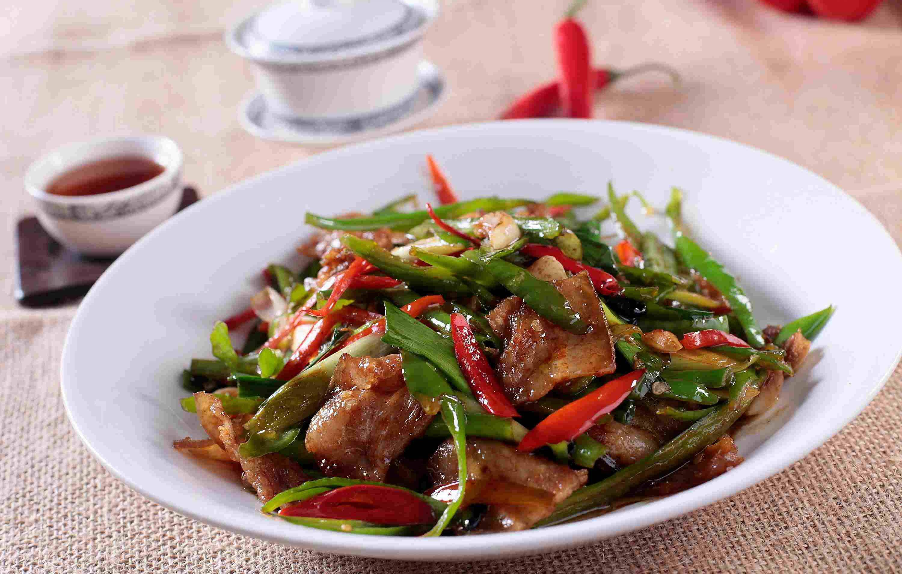

This is a Stir-Fried Pork with Green Peppers

Stir-fried pork with green peppers is a spicy and flavorful dish, popular in Hunan cuisine.
Ingredients
- 200g pork slices
- 1 green pepper
- 2 cloves garlic
- 1 tablespoon soy sauce
- 1 tablespoon light soy sauce
- A pinch of salt
- 1 tablespoon chili paste
Steps
- Marinate the pork slices with salt and light soy sauce for 10 minutes.
- Slice the green pepper and mince the garlic.
- Heat oil in a pan, stir-fry the garlic and chili paste until fragrant.
- Add the pork slices and stir-fry until browned.
- Mix in the green pepper, then add soy sauce and salt to taste.
- Cook until all ingredients are done and serve.